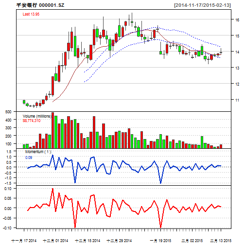
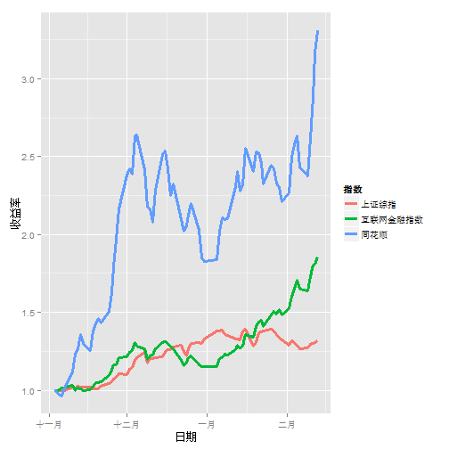
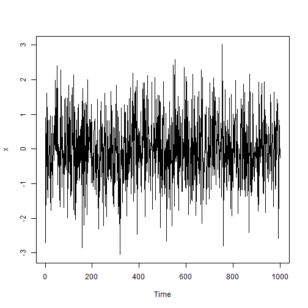

Your browser doesn't support the features required by impress.js, so you are presented with a simplified version of this presentation.
For the best experience please use the latest Chrome, Safari or Firefox browser.


x = rnorm(1000) plot.ts(x)

Use a spacebar or arrow keys to navigate